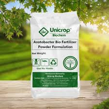

Products
At Coltivare, we are committed to providing farmers with high-quality, sustainable products that improve soil health, boost crop yields, and support long-term agricultural success. From advanced hybrid seeds to eco-friendly fertilizers and soil enhancers, our products are designed to meet the diverse needs of modern farming while protecting the environment.
Product Features:
- Eco-Friendly
- Affordable
- Long Shelf-Life
- Locally Sourced
Explore our product selection below to find the right solutions for your fields.
1. Hybrid Crop Seeds:
High-yield, drought-resistant seeds designed to perform well under varying climate conditions. They provide farmers with improved germination rates, pest resistance, and stronger harvests. - $149.99

2. Organic Compost:
Nutrient-rich compost made from natural agricultural and food waste. It improves soil fertility, boosts microbial activity, and enhances water retention while being eco-friendly and sustainable. - $44.99

3. Biofertilizers:
Living microorganisms (such as nitrogen-fixing bacteria, phosphate-solubilizing microbes, or mycorrhizal fungi) that naturally enhance plant nutrition. They reduce dependence on chemical fertilizers and improve long-term soil health. - $19.99

4. Precision-Formulated Fertilizer Blends:
Tailor-made fertilizer mixtures created based on soil testing and crop requirements. These blends optimize nutrient delivery, reduce waste, and increase crop yields with minimal environmental impact. - $499.99

5. Soil Conditioners & Enhancers:
Specialized soil treatments (like gypsum, humic acids, or microbial additives) that improve soil structure, pH balance, and nutrient absorption. They help restore degraded soils and maximize productivity. - $34.99

Test your soil quality before planting by using this checklist.
Not sure which fertilizer you need? Check out this guide! Fertilizer Recommendation Guide
Have Questions? Contact us Here!
Date Last Modified:
Date Last Modified: